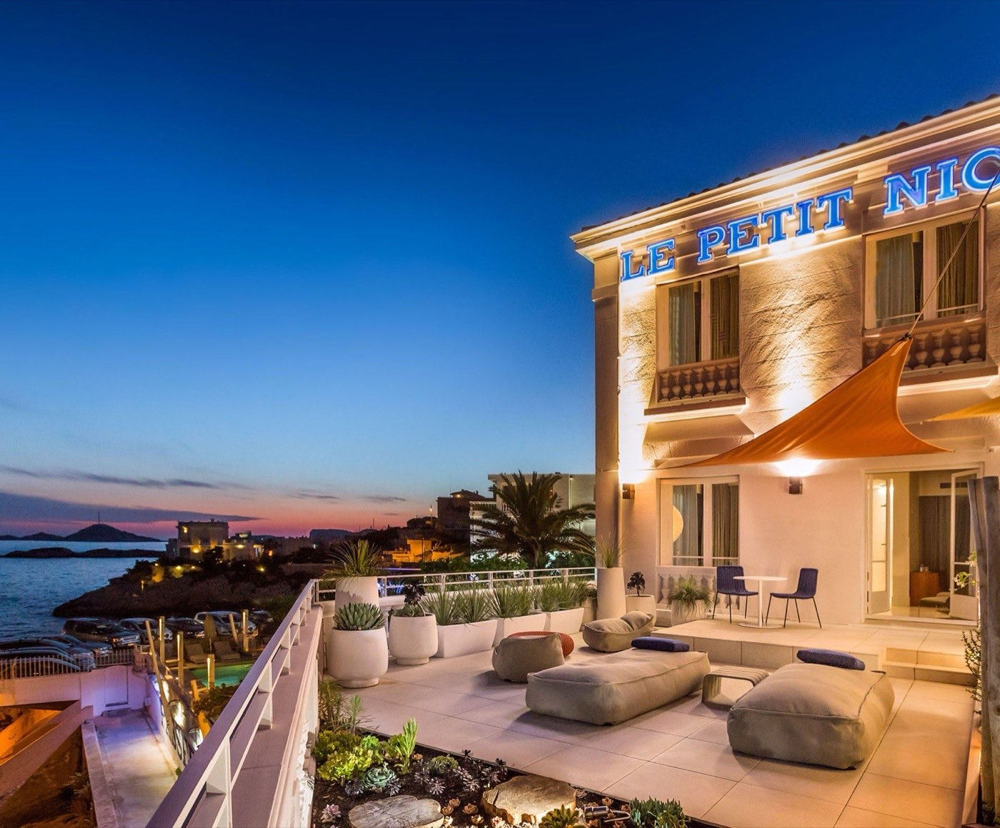
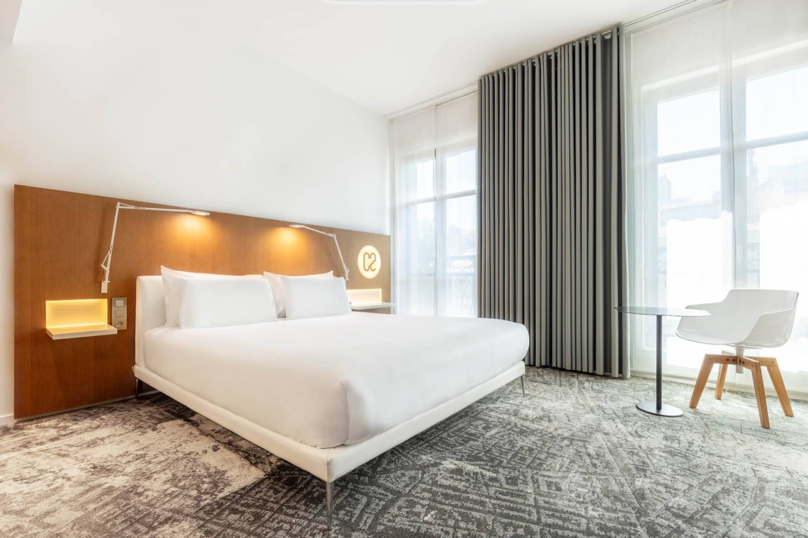
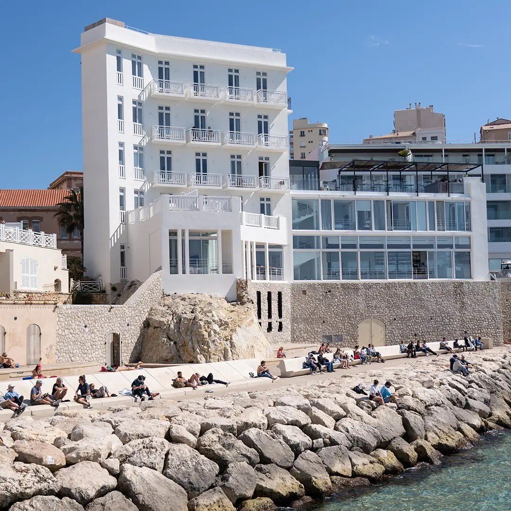
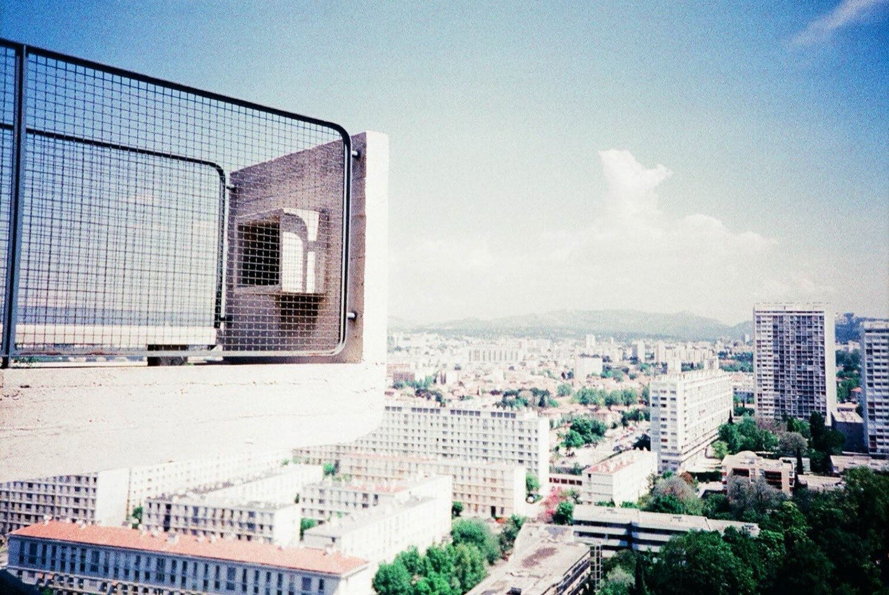

Les meilleurs hôtels de Marseille : 10 adresses testées
En dix ans, Marseille est passée d'une ville sans grand hôtel à une ville qui compte
quatre 5 étoiles, dont trois dans ce classement, et une table trois macarons. Dix adresses
notées, et mesurées à un critère que personne d'autre n'applique : ce qu'elles doivent
réellement à Marseille.
Par Swann Bertaud, rédacteur✺Publié le 22 juillet 2026✺18 min de lecture
Le Vieux-Port et les toits du Panier, vus depuis Notre-Dame-de-la-Garde.
Photo : Zairon, CC BY-SA 4.0.
TL;DR : l'essentielLe podium marseillais 2026
Passédat Le Petit Nice (Corniche), 9,2/10 :
16 chambres sur l'Anse de Maldormé, la seule table trois étoiles Michelin de la ville,
la même famille depuis 1917. Seul 5/5 à l'indice marseillais avec Les Bords de Mer.
Hôtel C2 (6e), 9,0/10 :
20 chambres dans un hôtel particulier du XIXe, mobilier Jacobsen et Citterio,
et une plage privée sur l'île Degaby.
InterContinental Hôtel Dieu (Vieux-Port), 8,8/10 :
l'ancien hôpital du XVIIIe devenu le grand hôtel de référence, spa Clarins
de 1 000 m², terrasse face à Notre-Dame-de-la-Garde.
Le critère qui départage : l'indice marseillais
LMHS ne suit pas le nombre d'étoiles. Les Bords de Mer, un 4 étoiles de
19 chambres, obtient 5/5, quand la Villa Massalia et l'Hôtel Le Corbusier plafonnent
à 2/5. À Marseille, un hôtel générique est une faute, et cet indice
sert précisément à la mesurer.
La grille LMHS Destination et l'indice marseillais
Ce palmarès applique la grille LMHS Destination, la déclinaison du Protocole LMHS réservée à nos classements par ville. Elle note sur 10 et pondère cinq critères : rapport qualité-prix (25 %), un critère thématique adapté à la ville (25 %, ici l'ancrage marseillais), la localisation (20 %), le service (20 %) et les avis clients vérifiés (10 %). C'est la grille de nos palmarès de Lyon, de Biarritz et de Bordeaux.
Le critère thématique prend ici la forme de l'indice marseillais LMHS, noté sur 5, qui mesure l'ancrage réel dans la ville sur cinq marqueurs, un point chacun : vue effective sur le Vieux-Port ou la mer, cuisine provençale authentique servie sur place (bouillabaisse, pieds-paquets, navettes), architecture locale préservée, lien avec un quartier historique (Panier, Endoume, Cours Julien), et accès facilité aux calanques.
Marseille est une ville trop singulière pour être servie par des hôtels interchangeables. Sa lumière, son iode, ses pierres blanches, son rapport à la mer et à la table : un établissement qui ignore tout cela peut être confortable, il ne sera jamais marseillais. C'est exactement ce que l'indice sanctionne.
Le tableau : scores, prix et indice marseillais
Rang
Hôtel
Quartier
Cat.
Chambres
Score LMHS
Indice marseillais
Basse saison
Haute saison
01
Passédat Le Petit Nice
Corniche
5★
16
9,2/10
5/5
544 €
2 975 €
02
Hôtel C2
6e
5★
20
9,0/10
4/5
159 €
391 €
03
InterContinental Hôtel Dieu
Vieux-Port
5★
194
8,8/10
4/5
167 €
400 €
04
Les Bords de Mer
Corniche
4★
19
8,7/10
5/5
200 €
320 €
05
Résidence du Vieux-Port
Vieux-Port
4★
48
8,2/10
4/5
137 €
343 €
06
Hôtel Beauvau MGallery
Vieux-Port
4★
73
8,0/10
4/5
82 €
274 €
07
Radisson Blu Vieux-Port
7e
4★
189
7,8/10
3/5
148 €
297 €
08
Villa Massalia
8e
4★
140
7,5/10
2/5
130 €
1 900 €*
09
Mama Shelter
6e
3★
125
7,2/10
3/5
79 €
206 €
10
Hôtel Le Corbusier
8e
3★
21
7,0/10
2/5
101 €
250 €
Prix indicatifs chambre d'entrée de gamme par nuit, taxes non incluses.
L'InterContinental compte 179 chambres et 15 suites, soit 194 clés.
*Le maximum de la Villa Massalia correspond à ses suites, non à une chambre standard :
l'écart avec son tarif d'entrée est le plus large du palmarès.
Sources : sites officiels, Booking.com, TripAdvisor, relevés en juillet 2026.
Notre sélection : les 10 meilleurs hôtels de Marseille
01

Passédat Le Petit Nice, Corniche 9,2/10
Pour qui : amateurs de haute gastronomie, couples en quête d'une adresse unique, voyageurs qui veulent l'essence de Marseille sans ses aspérités.
La famille Passédat est là depuis 1917. Pas depuis 2013 et la vague de rénovations post-Capitale européenne de la culture : 1917, l'année où le grand-père de Gérald Passédat acquiert la maison. C'est ce qui rend cette adresse absolument à part. Perché sur l'Anse de Maldormé, entre deux rochers de calcaire blanc, le Petit Nice regarde la Méditerranée comme si elle lui appartenait. Les 16 chambres et suites, réparties dans deux villas, sont toutes tournées vers le large : pas de vue sur un parking, pas de cour intérieure, l'horizon en permanence et les îles du Frioul qui flottent à cinq kilomètres. Matériaux nobles sans ostentation, pierre locale, lin, bois clair. Mais ce qui fait vraiment le Petit Nice, c'est la seule table trois étoiles Michelin de Marseille, et sa bouillabaisse revisitée en plusieurs services, puisée dans une soixantaine d'espèces de la Méditerranée. La piscine d'eau de mer chauffée, creusée dans la roche, achève le tableau.
Le bémol LMHS : seize chambres seulement, donc une disponibilité très tendue dès le printemps, et un restaurant qui se réserve plusieurs semaines à l'avance. Le tarif d'entrée, à 544 €, est plus du triple de celui du deuxième du classement, l'Hôtel C2 à 159 €. C'est une adresse d'exception au sens strict : elle ne se décide pas la veille.
Anse de Maldormé, Corniche JF Kennedy, 7e · 5★ · 16 chambres · Table 3 étoiles Michelin · Piscine d'eau de mer ·
Dès 544 €/nuit en basse saison, jusqu'à 2 975 € pour la suite panoramique ·
Indice marseillais 5/5 ·
Site officiel →
02

Hôtel C2, 6e arrondissement 9,0/10
Pour qui : amateurs de design et d'architecture, couples, voyageurs qui fuient les grands hôtels de chaîne.
Un hôtel particulier du XIXe siècle transformé en ce qui est aujourd'hui le meilleur boutique-hôtel de la ville. L'opération est remarquable : marbre d'époque conservé, fresques de plafond, parquets massifs, escalier monumental de marbre et de fer forgé desservant quatre étages, et par-dessus un mobilier design d'une précision chirurgicale, signé Arne Jacobsen, Antonio Citterio, Patricia Urquiola et Ron Arad. Vingt chambres seulement, toutes ouvertes sur un jardin intérieur qui coupe le bruit de la ville : le C2 ressemble à une maison privée plutôt qu'à un hôtel. Le spa, aux allures de thermes tamisés, descend sous le niveau du sol avec un bassin encastré entre les murs. Et l'établissement dispose d'une plage privée sur l'île Degaby, un ancien fort de Louis XIV accessible en quelques minutes de bateau, privilège rare dans une ville où les plages sont bondées.
Le bémol LMHS : le spa est régulièrement signalé hors service dans les avis clients, ce qui est difficile à accepter quand il fait partie de l'argumentaire. La restauration reste nettement en deçà du niveau de l'hébergement. Et la plage de l'île Degaby n'est accessible qu'en saison.
48 rue Roux de Brignoles, 6e · 5★ · 20 chambres · Spa avec bassin · Plage privée sur l'île Degaby ·
Dès 159 €/nuit en basse saison, de 213 € à 391 € en haute saison ·
Indice marseillais 4/5 ·
Site officiel →
Pour qui : voyageurs d'affaires haut de gamme, couples qui veulent le grand hôtel de Marseille, familles au budget conséquent.
L'Hôtel-Dieu a soigné des générations de Marseillais pendant deux siècles. En 2013, l'année où la ville devenait Capitale européenne de la culture, il a rouvert en hôtel de luxe. C'était le premier vrai grand hôtel de Marseille, et ça reste la référence de la catégorie. L'architecte d'intérieur Jean-Philippe Nuel a réussi l'exercice difficile de respecter un monument historique classé tout en créant des chambres contemporaines : 179 chambres et 15 suites, dont une partie avec vue sur le Vieux-Port et une trentaine avec terrasse privative. Le Spa by Clarins déploie 1 000 m² avec six cabines, piscine intérieure, deux saunas, deux hammams et solarium ; le bassin s'inspire des anciens lavoirs provençaux, granit et voûtes. La brasserie sert une cuisine d'inspiration provençale, et la terrasse du bar donne directement sur Notre-Dame-de-la-Garde. À 18 h, quand la lumière dorée frappe la basilique, c'est l'un des plus beaux spectacles de la ville.
Le bémol LMHS : le service est signalé inégal dans une partie des avis, ce qui surprend pour un établissement de ce rang. Le rapport qualité-prix se dégrade nettement sur les chambres sans vue, qui restent facturées au tarif d'un 5 étoiles. Et l'accès aux calanques demande une bonne demi-heure.
1 place Daviel, 2e · 5★ · 179 chambres et 15 suites · Spa by Clarins 1 000 m² · Au pied du Panier ·
Dès 167 €/nuit en basse saison, de 240 € à 400 € en haute saison ·
Indice marseillais 4/5 ·
Site officiel →
04

Les Bords de Mer, Corniche 8,7/10
Pour qui : couples en quête d'une vraie vue mer, amateurs de design, voyageurs qui veulent la Corniche sans les hôtels de chaîne.
L'ancien Richelieu : une façade Art déco des années 1930, blanche, qui tourne le dos à la circulation de la Corniche pour ne regarder que l'horizon. L'ossature d'origine a été conservée, avec l'ajout de baies vitrées généreuses, de balcons et de terrasses. Résultat : 19 chambres, toutes tournées vers la Méditerranée, sans une seule exception. C'est le seul établissement de ce palmarès à pouvoir l'affirmer. Le lobby mêle meubles dessinés sur mesure et pièces danoises, les salles de bain posent leurs vasques sur du chêne clair, les murs déclinent des gris, verts et bleus pastel. Le rooftop avec piscine chauffée face au Château d'If est l'un des plus beaux de la ville, et le spa, creusé dans la roche blonde, descend vers le niveau de la mer. Juste en face, le Cercle des Nageurs, fondé en 1921 et base d'entraînement de champions olympiques, est accessible aux seuls clients de l'hôtel.
Le bémol LMHS : les chambres sont petites au regard du tarif, ce qui revient souvent dans les avis. L'insonorisation côté Corniche est perfectible, et la circulation y est dense en journée. Dix-neuf chambres seulement, donc peu de disponibilités l'été.
52 Corniche JF Kennedy, 7e · 4★ · 19 chambres toutes vue mer · Rooftop et piscine chauffée · Spa dans la roche ·
Dès 200 €/nuit en basse saison, de 250 € à 320 € en haute saison ·
Indice marseillais 5/5 ·
Site officiel →
05
La Résidence du Vieux-Port 8,2/10
Pour qui : voyageurs qui veulent le Vieux-Port par excellence sans payer un 5 étoiles, couples, familles.
Construit au début des années 1950, cet hôtel est là depuis plus de soixante-dix ans. Il n'a ni la sophistication du C2 ni la puissance de l'InterContinental, mais il a ce que ces deux-là n'ont pas : une authenticité tranquille, presque familiale, et des balcons qui donnent directement sur le Vieux-Port. Le matin, depuis la chambre, on voit les pêcheurs rentrer à quai avec la prise de la nuit, on entend les moteurs et les mouettes, on sent le café qui monte des brasseries du quai. Les chambres assument un style rétro années 1950 cohérent avec l'histoire du bâtiment, sans tomber dans le pastiche. Sur Booking, la note de situation géographique frôle le maximum : c'est le meilleur rapport emplacement-prix de ce palmarès.
Le bémol LMHS : certains éléments de décoration accusent leur âge. Le bruit du port peut gêner les dormeurs légers, en particulier les soirs d'été. Ni spa ni piscine, et pas de restaurant gastronomique en propre.
Quai du Port, 2e · 4★ · 48 chambres · Balcons sur le Vieux-Port ·
Dès 137 €/nuit en basse saison, de 168 € à 343 € en haute saison ·
Indice marseillais 4/5 ·
Site officiel →
06
Hôtel Beauvau MGallery, Vieux-Port 8,0/10
Pour qui : amateurs d'histoire et de patrimoine, couples, voyageurs qui veulent l'adresse historique du port.
Inauguré en 1816, c'est le plus ancien hôtel de Marseille encore en activité. George Sand y a dormi, Chopin aussi, puis Lamartine, Mérimée et Musset. La rue Beauvau a été percée sur les terrains de l'ancien Arsenal des galères, et l'hôtel a absorbé deux siècles d'histoire marseillaise sans jamais se renier. Les chambres mêlent meubles Empire et Napoléon III avec des touches provençales contemporaines, et les boiseries d'époque ont été préservées. Le petit-déjeuner, servi dans une salle lumineuse ouverte sur la Canebière, est copieux et franchement provençal : le genre de repas qui vous met dans le bon état d'esprit pour une journée marseillaise.
Le bémol LMHS : l'ascenseur, unique et étroit, revient dans de nombreux avis, ce qui pèse dans un bâtiment de cette hauteur. Certaines chambres sont petites au regard du tarif de haute saison, et l'établissement n'a pas de spa digne de ce nom.
4 rue Beauvau, 1er · 4★ · 73 chambres · Ouvert depuis 1816 · Boiseries Napoléon III ·
Dès 82 €/nuit en basse saison, de 165 € à 274 € en haute saison ·
Indice marseillais 4/5 ·
Site officiel →
07
Radisson Blu Vieux-Port 7,8/10
Pour qui : voyageurs d'affaires, groupes, familles qui veulent la sécurité d'une chaîne internationale avec vue sur le port.
Le Radisson Blu joue dans une autre catégorie que les adresses précédentes : c'est un hôtel de chaîne, avec ce que cela implique de fiabilité et de standardisation. Mais son emplacement, à sept cents mètres du MuCEM et face au Vieux-Port, est difficile à battre, et ses 189 chambres et suites, dont une majorité avec vue sur le port, en font l'option la plus disponible de ce palmarès pour dormir face à l'eau. Les chambres sont spacieuses et impeccablement tenues, le personnel est régulièrement salué. Ce n'est pas l'adresse qui vous fera tomber amoureux de Marseille, c'est celle qui ne vous décevra pas.
Le bémol LMHS : très peu d'ancrage marseillais réel. L'expérience aurait pu se dérouler à Bordeaux ou à Lyon sans que rien ne change, ce qui lui coûte deux points d'indice. Le petit-déjeuner, autour de 29 €, est jugé cher pour ce qui est proposé.
7e arrondissement · 4★ · 189 chambres et suites · Face au Vieux-Port · À 700 m du MuCEM ·
Dès 148 €/nuit en basse saison, de 175 € à 297 € en haute saison ·
Indice marseillais 3/5 ·
Site officiel →
08
Villa Massalia, 8e arrondissement 7,5/10
Pour qui : familles, voyageurs qui privilégient l'espace et le confort sur la centralité, séjours de plusieurs jours.
La Villa Massalia joue une autre partition que les hôtels du Vieux-Port. Elle est dans le 8e, quartier résidentiel, à deux pas du parc Borély et des plages du Prado. La mer est là, à quelques centaines de mètres, mais elle n'est pas visible depuis toutes les chambres. Ce que l'hôtel offre en échange : de l'espace, une piscine, un spa complet avec sauna et hammam, et une tranquillité que les adresses du centre n'ont pas. Le Musée d'art contemporain est à proximité immédiate, le Vélodrome également. C'est l'adresse pour qui veut Marseille sans le bruit du port, ou pour les familles qui préfèrent la plage au quai.
Le bémol LMHS : éloignée du centre historique et du Vieux-Port, comptez vingt minutes à pied. L'ancrage marseillais est le plus faible du palmarès avec l'Hôtel Le Corbusier : rien dans le bâtiment, la carte ou le décor ne dit qu'on est à Marseille. Les avis clients sont sensiblement en dessous des autres adresses de cette sélection.
17 place Louis Bonnefon, 8e · 4★ · 140 chambres · Piscine et spa · Proche des plages du Prado ·
Dès 130 €/nuit en basse saison, jusqu'à 1 900 € pour les suites en haute saison ·
Indice marseillais 2/5 ·
Site officiel →
09
Mama Shelter Marseille, 6e7,2/10
Pour qui : voyageurs solo, jeunes couples, amateurs de design et de vie de quartier, budgets intermédiaires.
Philippe Starck a signé le design, et c'est la première chose que l'on retient. La seconde, plus décisive : l'hôtel est à dix minutes à pied du Cours Julien, le quartier le plus vivant et le plus authentiquement marseillais de la ville, street art sur tous les murs, marchés, bars à vins naturels, terrasses. Le Mama Shelter s'y est installé avant que le quartier ne devienne ce qu'il est, et il a contribué à le faire. Les 125 chambres sont petites mais bien pensées, avec une literie de qualité et des écrans connectés. Le restaurant sert de grandes assiettes à partager, le rooftop est animé. C'est un hôtel pour qui veut vivre Marseille plutôt que la regarder depuis une terrasse de palace.
Le bémol LMHS : pas de vue mer, pas de cuisine provençale, et le Vieux-Port est loin à pied. La note de localisation dans les avis clients est nettement la plus basse du palmarès, ce qui est logique pour une adresse volontairement excentrée. Les chambres sont vraiment petites.
64 rue de la Loubière, 6e · 3★ design · 125 chambres · Design Philippe Starck · À 10 min du Cours Julien ·
Dès 79 €/nuit en basse saison, de 104 € à 206 € en haute saison ·
Indice marseillais 3/5 ·
Site officiel →
10

Hôtel Le Corbusier, Cité Radieuse 7,0/10
Pour qui : architectes, amateurs de design et d'histoire du XXe siècle, voyageurs en quête d'une expérience hors norme.
La Cité Radieuse a été construite entre 1947 et 1952, et elle est inscrite au patrimoine mondial de l'UNESCO depuis 2016. L'hôtel qui y est intégré propose l'une des expériences les plus singulières que l'on puisse vivre en France. Pas pour le confort : les 21 chambres sont fonctionnelles plutôt que luxueuses. Pas pour la vue mer : le boulevard Michelet n'est pas la Corniche. Mais pour ce que cela représente, dormir dans une utopie sociale brutaliste, dans des modules dimensionnés selon le Modulor, entouré de mobilier signé Charlotte Perriand et Jean Prouvé. Le restaurant du dernier étage donne sur les toits de Marseille, et la terrasse-toit, avec sa pataugeoire et son gymnase, est ouverte à tous.
Le bémol LMHS : la note globale dans les avis clients est la plus faible du palmarès, et le petit-déjeuner revient souvent comme décevant. L'hôtel est éloigné du centre et du Vieux-Port. Il faut venir en sachant que l'on paie une expérience architecturale, pas une prestation hôtelière.
280 boulevard Michelet, 8e · 3★ · 21 chambres · Patrimoine mondial UNESCO · Mobilier Perriand et Prouvé ·
Dès 101 €/nuit en basse saison, jusqu'à 250 € en haute saison ·
Indice marseillais 2/5 ·
Site officiel →
Le mot de SwannMarseille mérite-t-elle enfin sa réputation hôtelière ?
La réponse courte est oui, avec des nuances. En 2013, quand l'InterContinental a ouvert dans l'Hôtel-Dieu, beaucoup y ont vu le début d'une transformation. Ils avaient raison : en dix ans, Marseille est passée d'une ville sans grand hôtel à une ville qui compte plusieurs 5 étoiles, une table trois macarons et des boutique-hôtels qui tiendraient leur rang à Paris ou à Barcelone. Mais ce qui me frappe, c'est que les meilleures adresses sont celles qui ont résisté à la tentation de singer d'autres villes. Le Petit Nice est marseillais jusqu'à l'os, la famille est là depuis 1917, la cuisine sort de la Méditerranée et les pierres sont celles de la Corniche. Les Bords de Mer ont préservé leur façade Art déco plutôt que de la raser. Le C2 a été fait par des architectes marseillais, pour Marseille. Ce que je reproche au Radisson Blu et à la Villa Massalia, c'est précisément de ne pas jouer ce jeu : on pourrait les déposer à Lyon ou à Bordeaux sans que personne ne remarque la différence. Dans une ville aussi singulière, c'est une faute.
Swann Bertaud, rédacteur hôtellerie de luxe
Marseille par quartier : lequel vous correspond
Vieux-Port et centre historique
C'est le cœur de la ville. Le matin, le marché aux poissons s'installe sur le quai, et les pêcheurs vendent à la criée ce qu'ils ont ramené de la nuit. Si vous voulez être au centre de tout, c'est ici. L'InterContinental Hôtel Dieu (8,8/10) est le choix haut de gamme, au pied du Panier. L'Hôtel Beauvau MGallery (8,0/10) est l'adresse historique, ouverte depuis 1816, et la plus abordable du secteur à 82 € en basse saison. La Résidence du Vieux-Port (8,2/10) offre le meilleur rapport emplacement-prix, avec ses balcons directement sur l'eau. Le Radisson Blu (7,8/10) complète l'offre pour les groupes et les voyages d'affaires.
La Corniche et les quartiers sud
La Corniche Kennedy longe la mer sur cinq kilomètres, de la plage des Catalans aux Goudes. C'est la plus belle route de Marseille, et c'est là que se trouvent les deux meilleures adresses avec vue mer. Le Passédat Le Petit Nice (9,2/10) domine l'Anse de Maldormé, Les Bords de Mer (8,7/10) alignent 19 chambres toutes face à la Méditerranée. Ce sont aussi les deux seuls 5/5 à l'indice marseillais. La Villa Massalia (7,5/10) est plus à l'intérieur, dans le 8e, mais à deux pas des plages du Prado, avec piscine et spa.
Le Panier, le Cours Julien et les quartiers vivants
Le Panier est le plus vieux quartier de Marseille : ruelles en pente, façades colorées, Vieille Charité du XVIIe, ateliers d'artistes. L'InterContinental est à son pied, ce qui reste la meilleure façon de combiner grand hôtel et quartier historique. Pour une expérience plus urbaine et moins chère, le Mama Shelter (7,2/10) capte l'énergie du Cours Julien, quartier créatif et couvert de street art. L'Hôtel Le Corbusier (7,0/10), boulevard Michelet, est dans une catégorie à part : c'est un monument classé à l'UNESCO avant d'être un hôtel. Et l'Hôtel C2 (9,0/10), rue Roux de Brignoles, se tient à la frontière entre le Vieux-Port et les quartiers résidentiels du sud, idéalement placé pour explorer les deux.
FAQ : les meilleurs hôtels de Marseille
Quel est le meilleur hôtel de luxe à Marseille en 2026 ?
Selon la grille LMHS Destination, le Passédat Le Petit Nice (5 étoiles, Corniche Kennedy) est le meilleur hôtel de luxe de Marseille avec 9,2/10 et un indice marseillais de 5/5. Il cumule la seule table trois étoiles Michelin de la ville, seize chambres toutes tournées vers la mer et une présence familiale depuis 1917. Pour un hôtel de luxe plus central et plus grand, l'InterContinental Hôtel Dieu (194 clés, Vieux-Port) est la deuxième option.
Où dormir à Marseille près du Vieux-Port ?
Trois adresses se détachent. L'InterContinental Hôtel Dieu (5 étoiles, 1 place Daviel, dès 167 €) pour le haut de gamme, l'Hôtel Beauvau MGallery (4 étoiles, 4 rue Beauvau, dès 82 €) pour l'adresse historique et le meilleur prix, et la Résidence du Vieux-Port (4 étoiles, quai du Port, dès 137 €) pour ses balcons directement sur l'eau. Le Radisson Blu Vieux-Port (189 chambres) complète l'offre, à sept cents mètres du MuCEM.
Quel boutique-hôtel choisir à Marseille ?
L'Hôtel C2 (5 étoiles, 20 chambres, 6e, dès 159 €) : un hôtel particulier du XIXe siècle préservé, un mobilier signé Jacobsen, Citterio, Urquiola et Ron Arad, et une plage privée sur l'île Degaby. Les Bords de Mer (Corniche Kennedy, 19 chambres, dès 200 €) est l'alternative avec vue mer intégrale et façade Art déco conservée.
Quelle est la meilleure période pour visiter Marseille ?
Mai-juin et septembre-octobre. La lumière est parfaite, la chaleur supportable, les calanques accessibles sans la foule, et les tarifs hôteliers restent raisonnables. Juillet-août est la haute saison, avec des prix qui peuvent doubler et des calanques saturées. De novembre à mars, les tarifs sont les plus bas et la ville plus authentique, mais certains hôtels réduisent leurs services.
Y a-t-il des hôtels avec vue mer à Marseille ?
Oui. Les Bords de Mer est la référence absolue : ses 19 chambres font toutes face à la Méditerranée, sans exception. Le Passédat Le Petit Nice est l'option la plus luxueuse, avec une vue mer totale depuis ses deux villas de l'Anse de Maldormé. Pour une vue sur le port plutôt que sur le large, la Résidence du Vieux-Port et ses balcons, et le Radisson Blu Vieux-Port, dont une majorité des 189 chambres donne sur l'eau, sont les options les plus accessibles.
Méthode et sources
10 établissements retenus sur l'offre hôtelière marseillaise. Grille LMHS Destination, notée sur 10 : rapport qualité-prix (25 %), ancrage marseillais (25 %), localisation (20 %), service (20 %), avis clients vérifiés (10 %). L'indice marseillais LMHS, noté sur 5, est calculé séparément sur cinq marqueurs vérifiables, un point chacun : vue effective sur le port ou la mer, cuisine provençale authentique servie sur place, architecture locale préservée, lien avec un quartier historique, accès facilité aux calanques. Aucun partenariat commercial, aucune affiliation. Tarifs relevés en juillet 2026 sur les sites officiels, Booking.com et TripAdvisor, chambre d'entrée de gamme, taxes non incluses. Capacités et équipements vérifiés sur les sites officiels : 16 chambres au Petit Nice avec piscine d'eau de mer chauffée, 20 chambres et plage de l'île Degaby au C2, 179 chambres et 15 suites avec spa Clarins de 1 000 m² et six cabines à l'InterContinental. Photographies : Wikimedia Commons, Vieux-Port par Zairon (CC BY-SA 4.0), Hôtel-Dieu par Fred Romero (CC BY 2.0), Cité Radieuse par Cyril Caton (CC BY 2.0).